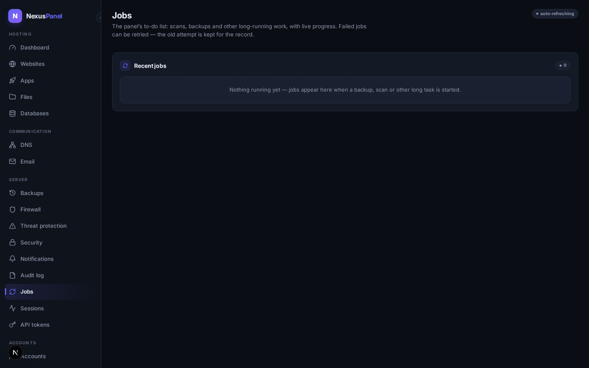
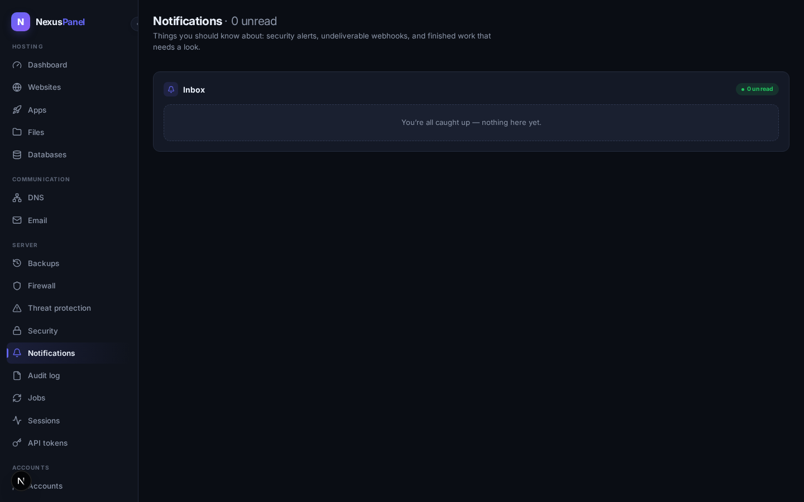

Jobs, webhooks & notifications
Three ways the panel keeps you in the loop and lets other systems work with it: the job center (every long-running task with live state and a retry button), outbound webhooks (signed event delivery with honest dead-letters), and the notification center (alerts that matter, in-app).

Job center live in the panel
Backups, virus scans and other long-running work register themselves in the job center the moment they start: state (queued → running → done / failed), a progress bar, attempt counts and the actual error text when something failed. Retrying a failed job asks for confirmation, starts a new attempt, and keeps the old row as history — nothing is overwritten, and the retrigger itself is audited.
Outbound webhooks live in the panel
Subscribe any HTTP endpoint to panel events: exact names, families
(account.*, backup.*) or everything
(*). Deliveries are POSTed as JSON and signed —
X-Nexus-Signature: sha256=…, an HMAC over the timestamp
and the raw body, so your receiver can verify authenticity and reject
replays. Secrets are stored encrypted (SecretBox) and never shown back.
Delivery is honest about failure: a down receiver gets real retries with exponential backoff (30 s doubling, capped at 1 h, five attempts), and then the delivery is marked dead — visible in the dead-letter view, with server admins notified in-app. A dead delivery can be redriven on demand once your endpoint is back. A test button sends a signed ping so you can prove the receiver's signature check before trusting it.

Notification center live in the panel
Security-relevant outcomes land in your inbox: audit-chain verification failures (the daily checker — see the Audit chapter), webhook dead-letters, and finished scans worth a look. Unread counts show in the panel; marking read is per-item or all-at-once. Notifications are strictly per-user — you never see anyone else's feed.
Not yet (honest list)
- Event subscription picker with live event browsing — today you type patterns; a browsable event catalog follows.
- BullMQ/Valkey-backed workers — v1.0 single-node dispatches in-process; the job registry (queue, state, attempts) is already BullMQ-shaped so a multi-node deployment swaps only the executor.
- Email/Telegram notification channels — the in-app center is the v1.0 surface; outbound channels ride the same producer API.